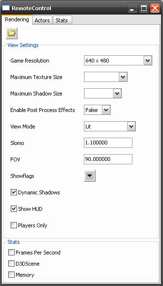
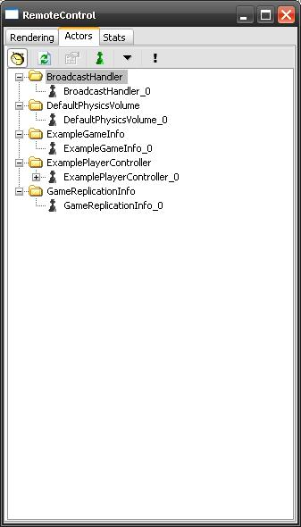
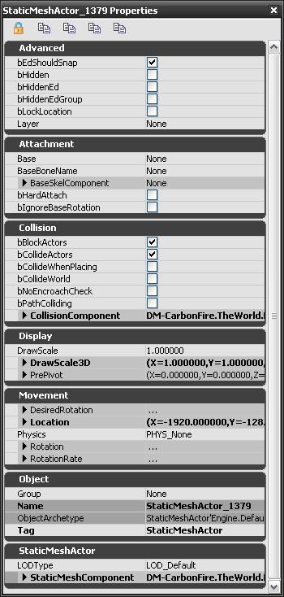
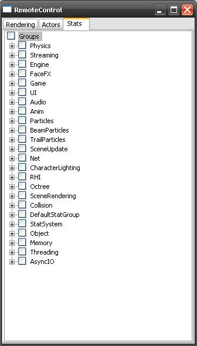

UDN
Search public documentation:
RemoteControl
日本語訳
中国翻译
한국어
Interested in the Unreal Engine?
Visit the Unreal Technology site.
Looking for jobs and company info?
Check out the Epic games site.
Questions about support via UDN?
Contact the UDN Staff
中国翻译
한국어
Interested in the Unreal Engine?
Visit the Unreal Technology site.
Looking for jobs and company info?
Check out the Epic games site.
Questions about support via UDN?
Contact the UDN Staff
Remote Control Feature
Document Summary: Explains the Remote Control feature. Document Changelog: Edited by Richard Nalezynski for creation.Overview
The Remote Control is a new feature that can be used to manipulate render options, inspect Actors, and view realtime stats.Remote Control
Prior to the April 2007 QA-Approved Build, the Remote Control is enabled by default during non-editor play sessions.editactor support, though you can pass -remotecontrol or -wxwindows on the command line to get the old behavior.
Rendering Page
The Rendering Page contains a list of varoius settings and stats which can be toggled or set. On the toolbar is an icon to open up a level. Settings
- Game Resolution - choose from a set of standard or fullscreen modes, or create a custom resolution
- Maximum Texture Size - choose from 32x32 through 4096x4096
- Maximum Shadow Size - choose from 32x32 through 512x512
- Enable Post Process Effects - choose either True or False
- View Mode - choose from Wireframe, BrushWireframe, Unlit, Lit, LightingOnly, LightComplexity, ShaderComplexity
- Slomo - set a value (1.0 is normal)
- FOV - set a value (typically 90.0)
- Showflags - select toggles for Bones, Bounds, BSP, Collision, Constraints, Decals, Decal Info, Fog, Foliage, Hit Proxies, Level Coloration, Mesh Edges, Missing Collision, Particles, Vertex Colors, Scene Capture Portals, Shadow Frustums, Skeletal Meshes, Skins, Sprites, Static Meshes, Terrain, Terrain Patches, Constraints
- Dynamic Shadows - toggle on or off
- Show HUD toggle HUD drawing on or off (this is different from UnrealUI scenes)
- Players Only - toggle on or off
Stats
- Frames Per Second - toggle on or off
- D3D Scene - Not used at this time
- Memory - toggle on or off
Actors Page
The Actors Page contains a tree list of all the Actors in the current level, as well as controls to filter the list. On the toolbar are icons to toggle the display of dynamic Actors; refresh the Actor list; show the selected Actor's properties; show sub-objects with debug options; auto-expand the Actor tree; and show properties for the Actor under the crosshairs.   When showing properties for an Actor, you have the option of locking the selected Actor; copying the properties to the Clipboard; completly copying the properties to the Clipboard (including editinline Objects); and expanding and collapsing all categories.Stats Page
The Stats Page contains a tree list of groups of stats that can be toggled either individually, or by group. Groups
- Physics - dynamics, events, etc.
- Streaming - game and rendering threads, audio, loading times, etc.
- Engine - foliage, terrain, decals, input, HUD, shadows, etc.
- FaceFX - morphing, materials, bone blending, etc.
- Game - Actors, Components, Scripts, Kismet, garbage collection, etc.
- UI - scenes, widgets, etc.
- Audio - components, instances, etc.
- Anim - updates, blends, etc.
- Particles - sprites, meshes, etc.
- BeamParticles - spawn, render, etc.
- TrailParticles - spawn, render, etc.
- SceneUpdate - primitives, lights, etc.
- Net - packets, bunches, static object references, name references, etc.
- CharacterLighting - visibility, environment, etc.
- RHI - triangles, lines, primitives
- Octree - point and radius check; time and count
- SceneRendering - occlusion, shadows, lights, etc.
- Collision - Level, Terrain, BSP, Static Meshes, Actors; Single-Line and Multi-Line checks
- DefaultStatGroup - root
- StatSystem - per frame capture
- Object - properties, config, localization, name table, etc.
- Memory - virtual memory, physcal memory, etc.
- Threading - rendering and game threads
- AsyncIO - read counts and sizes (fulfilled, canceled, outstanding)
Console Commands
To toggle the Remote Control, enterREMOTECONTROL or RC at the Console.
-remotecontrol or -wxwindows. These commands are always available when running from a Play In Editor session.
To suppress Remote Control when invoking game executable from the command line, specify -norc or -noremotecontrol.